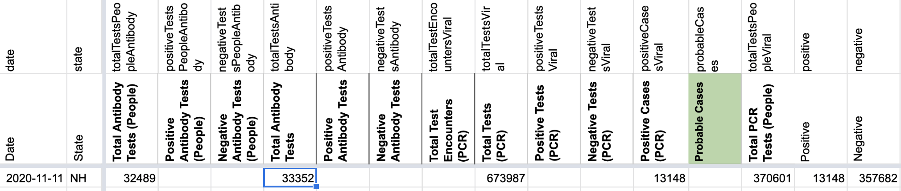
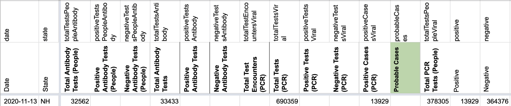

#1143: [NH] Issue for backfilling all missed updates that were not backfilled before March 7, 2021
Issue number 1143
hmhoffman opened this issue on April 6, 2021, 10:00 AM PDT
State: NH
Dates affected: [dates]
Describe the issue: New Hampshire sometimes updated after the time of our daily update. In order to ensure our timeseries is as complete as possible, we patch these late updates in our historical data.
Comments
#1143: [NH] Issue for backfilling all missed updates that were not backfilled before March 7, 2021
Issue number 1143
hmhoffman opened this issue on April 6, 2021, 10:00 AM PDT
State: NH
Dates affected: [dates]
Describe the issue: New Hampshire sometimes updated after the time of our daily update. In order to ensure our timeseries is as complete as possible, we patch these late updates in our historical data.
Comments
#1114: [NH] Patch 02/26/21 late update
Issue number 1114
hmhoffman opened this issue on February 27, 2021, 2:01 PM PST
State: NH
Dates affected: 02/26/21
Describe the issue: On February 26, 2021, New Hampshire updated their COVID-19 data after the time of our daily update.
Comments
#1114: [NH] Patch 02/26/21 late update
Issue number 1114
hmhoffman opened this issue on February 27, 2021, 2:01 PM PST
State: NH
Dates affected: 02/26/21
Describe the issue: On February 26, 2021, New Hampshire updated their COVID-19 data after the time of our daily update.
Comments
Rows edited: 1 NH 2021-02-26 positive: 74893 (was 74568) negative: 575460 (was 574809) hospitalizedCurrently: 95 (was 97) hospitalizedCumulative: 1109 (was 1106) inIcuCumulative: 344 (was 343) recovered: 70899 (was 70547) death: 1167 (was 1163) probableCases: 22211 (was 22101) positiveCasesViral: 52682 (was 52467) totalTestsPeopleViral: 628142 (was 627276) totalTestsPeopleAntibody: 37609 (was 37558) lastUpdateTime: 2021-02-26 14:00:00+00:00 (was 2021-02-25 14:00:00+00:00)
#1105: [NH] Patch late 02/17 update
Issue number 1105
hmhoffman opened this issue on February 18, 2021, 1:13 PM PST
State: NH
Dates affected: 02/17/21
Describe the issue: On February 17, 2021, New Hampshire updated their COVID-19 data after the time of our daily update.
Comments
Rows edited: 1 NH 2021-02-17 positive: 71965 (was 71215) negative: 567204 (was 566316) hospitalizedCurrently: 126 (was 119) hospitalizedCumulative: 1083 (was 1080) inIcuCumulative: 338 (was 336) recovered: 67445 (was 67222) death: 1148 (was 1136) probableCases: 21167 (was 20642) totalTestsViral: 1377103 (was 1370889) positiveCasesViral: 50797 (was 50573) totalTestsPeopleViral: 618001 (was 616889) totalTestsAntibody: 38765 (was 38713) totalTestsPeopleAntibody: 37226 (was 37178) totalTestsAntigen: 172069 (was 168093) lastUpdateTime: 2021-02-17 14:00:00+00:00 (was 2021-02-16 14:00:00+00:00)
#1105: [NH] Patch late 02/17 update
Issue number 1105
hmhoffman opened this issue on February 18, 2021, 1:13 PM PST
State: NH
Dates affected: 02/17/21
Describe the issue: On February 17, 2021, New Hampshire updated their COVID-19 data after the time of our daily update.
Comments
Rows edited: 1 NH 2021-02-17 positive: 71965 (was 71215) negative: 567204 (was 566316) hospitalizedCurrently: 126 (was 119) hospitalizedCumulative: 1083 (was 1080) inIcuCumulative: 338 (was 336) recovered: 67445 (was 67222) death: 1148 (was 1136) probableCases: 21167 (was 20642) totalTestsViral: 1377103 (was 1370889) positiveCasesViral: 50797 (was 50573) totalTestsPeopleViral: 618001 (was 616889) totalTestsAntibody: 38765 (was 38713) totalTestsPeopleAntibody: 37226 (was 37178) totalTestsAntigen: 172069 (was 168093) lastUpdateTime: 2021-02-17 14:00:00+00:00 (was 2021-02-16 14:00:00+00:00)
#1103: [NH] Patch late 02/12/21 update
Issue number 1103
hmhoffman opened this issue on February 13, 2021, 2:35 PM PST
State: NH
Dates affected: 02/12/21
Describe the issue: On February 12, 2021, New Hampshire updated their COVID-19 data after the time of our daily update.
Comments
Rows edited: 1 NH 2021-02-12 positive: 70072 (was 69612) hospitalizedCurrently: 131 (was 138) hospitalizedCumulative: 1071 (was 1069) recovered: 65730 (was 65349) death: 1126 (was 1117) probableCases: 20262 (was 20052) positiveCasesViral: 49810 (was 49560) totalTestsPeopleViral: 614990 (was 613210) totalTestsPeopleAntibody: 37010 (was 36974) lastUpdateTime: 2021-02-12 14:00:00+00:00 (was 2021-02-11 14:00:00+00:00)
Rows edited: 1 NH 2021-02-12 negative: 565180 (was 563650)
#1103: [NH] Patch late 02/12/21 update
Issue number 1103
hmhoffman opened this issue on February 13, 2021, 2:35 PM PST
State: NH
Dates affected: 02/12/21
Describe the issue: On February 12, 2021, New Hampshire updated their COVID-19 data after the time of our daily update.
Comments
Rows edited: 1 NH 2021-02-12 positive: 70072 (was 69612) hospitalizedCurrently: 131 (was 138) hospitalizedCumulative: 1071 (was 1069) recovered: 65730 (was 65349) death: 1126 (was 1117) probableCases: 20262 (was 20052) positiveCasesViral: 49810 (was 49560) totalTestsPeopleViral: 614990 (was 613210) totalTestsPeopleAntibody: 37010 (was 36974) lastUpdateTime: 2021-02-12 14:00:00+00:00 (was 2021-02-11 14:00:00+00:00)
Rows edited: 1 NH 2021-02-12 negative: 565180 (was 563650)
#1036: [NH] Patch 01/01/21 late update
Issue number 1036
amandafrench opened this issue on January 1, 2021, 5:25 PM PST
Labels Data quality No data available not stale
State: New Hampshire
Date: 1/1/2021
Describe the problem Adding data that updated after our publish time
Comments
This issue has been automatically marked as stale because it has not had recent activity. It will be closed if no further activity occurs. Thank you for your contributions!
This issue has been closed because it was stale for 15 days, and there was no further activity on it for 10 days. You can feel free to re-open it if the issue is important, and label it as "not stale."
New Hampshire did not update their dashboards on 1/1/21, so we do not have data to update the carried over values.
#1028: [NH] Backfill confirmed & probable before 10/3-11/19
Issue number 1028
karaschechtman opened this issue on December 26, 2020, 8:34 AM PST
Labels Data quality
State or US: NH
Describe the problem NH provided a breakout of confirmed & probable that we did not capture from 10/3-11/19. It looks like these can be mostly backfilled from screenshots. They may require a few excursions into archive.org during the time when NH switched from a secondary dashboard to a PDF
Link to data source https://screenshots.covidtracking.com/new-hampshire/
Comments
#1027: [NH] Correctly Capture Confirmed/Probable Breakdown for NH
Issue number 1027
karaschechtman opened this issue on December 26, 2020, 8:29 AM PST
Labels Data quality
State or US: NH
Describe the problem NH provides a breakdown between antigen and PCR confirmed cases that we captured starting 11/20 (see related issue #1028 for a backfill of days we didn't capture) It's clear that these antigens are revised down upon PCR confirmation because, until 12/13, NH provided the figures of individuals who were reclassified to PCR as a separate number. We currently capture the lumped numbers in Confirmed cases, the antigen numbers in positive antigen tests (people), and nothing in probable cases Start capturing PCR only as a confirmed number and antigen as a probable number and delete the antigen positive number since these are revised downward
Link to data source The PCR only number can be calculated by subtracting and cross checking with NH's secondary screenshots to ensure this equals "PCR Positive" (12/13 onward) or the sum of "PCR Positive" + "PCR and Antigen Positive" (up to 12/13)
Comments
This also affects Negatives. Revising historical negatives to subtract the new confirmed cases from 11/20 Changes (9).txt
#1012: [NH] Capture antigen positive as probable cases and add confirmed cases by summing antigen + PCR positive and PCR positive columns from daily reports
Issue number 1012
karaschechtman opened this issue on December 13, 2020, 11:29 AM PST
Labels Data quality
State or US: NH
Describe the problem NH revises down its antigen count upon positive PCR test, making it a probable case count rather than an antigenpositive count. Plus, we can get a PCR confirmed count by summing the PCR + antigen positive and PCR only positive counts in the state reports.
Link to data source State reports. We will probably be able to confirmed from subtracting total cases - antigen cases. And we can get the probable timeseries from our antigen column. https://www.nh.gov/covid19/documents/case-summary.pdf
Comments
On 10/3/20, NH began releasing a PCR positive + Antigen positive breakdown on their COVID-19 Summary Dashboard.
{kind=link}
Our time series for Positive Antigen Tests (People) only goes back until 11/20/20.
We have screenshots of the dashboard from 10/3/20 - 11/11/20. On 11/12/20, NH's COVID-19 Summary Dashboard began to have issues, and we were unable to resume screenshots of the page (now PDF) until 12/11/20. This means that there is a one week period from 11/12/20 - 11/19/20 where we do not have numbers.
{kind=link}
Whoops, double filed for this at #1027 and #1028
#998: [NH] New Hampshire started reporting Total antigen tests recently, backfilling values for 12/8-12/9
Issue number 998
jaclyde opened this issue on December 9, 2020, 7:13 PM PST
Labels Data quality
State: New Hampshire
Issue: New Hampshire started reporting Total antigen tests (available in the api as totalTestsAntigen) on 12/5/2020, on their "Interactive Analytics" dashboard. Because the Total tests are only viewable after changing two toggles we do not have screenshots of all the values. We have screenshots from 12/8 and 12/9, and will backfill those days. If previous days values become available we will add those as well.
Source:


Comments
BEFORE:

AFTER:
#973: [NH] Backfill NH's 11/24 update
Issue number 973
muamichali opened this issue on November 25, 2020, 9:18 AM PST
Labels Data quality
State or US: New Hampshire
Describe the problem On 11/24, New Hampshire had not updated its COVID-19 data by the time we published our daily update. This will backfill the 11/24 numbers.
Link to data source https://covidtracking.com/screenshots/NH/NH-tertiary-20201125-054030.png
Comments
Rows edited: 1
NH 2020-11-24
positive: 18382 (was 18042)
negative: 389286 (was 388185)
hospitalizedCumulative: 832 (was 831)
inIcuCumulative: 276 (was 277)
recovered: 13558 (was 13226)
death: 513 (was 512)
totalTestsViral: 775598 (was 770791)
positiveCasesViral: 18382 (was 18042)
totalTestsPeopleViral: 407668 (was 406227)
totalTestsAntibody: 33949 (was 33915)
totalTestsPeopleAntibody: 32967 (was 32939)
positiveTestsPeopleAntigen: 2962 (was 2830)
lastUpdateTime: 2020-11-24 14:00:00+00:00 (was 2020-11-23 14:00:00+00:00)
dateChecked: 2020-11-25 18:15:00+00:00 (was 2020-11-24 23:46:00+00:00)
checker: RSG (was DZL)
doubleChecker: MM (was SB)
`
#872: [NH] Issue thread for NH late updates beginning 9/27
Issue number 872
the-daniel-lin opened this issue on September 28, 2020, 11:51 AM PDT
Labels Backfill Data quality stale
State or US: New Hampshire
Describe the problem NH sometimes updates after our daily publication time, so we don't end up collecting their data the day of. Beginning 9/27, this issue thread will log all of the backfills due to NH late updates.
Backfilled dates in this issue: 9/27, 9/30, 10/4, 10/14, 10/20, 10/23, 11/11, 11/13, 11/24
Previous backfill dates include: , https://github.com/COVID19Tracking/issues/issues/807 (9/01), https://github.com/COVID19Tracking/issues/issues/821 (9/9), https://github.com/COVID19Tracking/issues/issues/855 (9/21)
Link to data source https://www.nh.gov/covid19/
Comments
BEFORE 9/27:

AFTER 9/27:

BEFORE 9/30:

AFTER 9/30:
BEFORE 10/4:
AFTER 10/4:

On 10/4, NH removed the testing by individuals from their website. As a result, we've carried over the values for Total Antibody Tests (People), Total PCR Tests (People), and Negative.
** UPDATE 10/5 ** Total Antibody Tests (People) and Total PCR Tests (People) values returned with the 10/5 update.
BEFFORE 10/5:

AFTER 10/5: ** UPDATE 10/5 ** Total Antibody Tests (People) and Total PCR Tests (People) values returned with the 10/5 update. NH seems to have skipped the 10/5 update for the Interactive Dashboard (https://www.nh.gov/covid19/dashboard/overview.htm#dash) and the Summary Dashboard (https://www.nh.gov/covid19/dashboard/summary.htm) . As a result, We are carrying over Antibody Tests (People), Total Tests (PCR), and "Cumulative in ICU."
BEFORE 10/14:


AFTER 10/14:

On 10/14 NH updated after we published. I patched that late update.
BEFORE:

AFTER:
 On 10/20 NH updated after we published, I patched that late update.
On 10/20 NH updated after we published, I patched that late update.
BEFORE:

AFTER:


On 10/23 NH updated after we published. I patched that late update
This issue has been automatically marked as stale because it has not had recent activity. It will be closed if no further activity occurs. Thank you for your contributions!
BEFORE 11/11:


AFTER 11/11:


All metrics were patched except for Total antibody tests (specimens), Total PCR tests (specimens), and cum. icu as the NH dashboard were experiencing technical difficulties.
BEFORE 11/13:

AFTER 11/13: 
All metrics were patched except for Total antibody tests (specimens), Total PCR tests (specimens), and cum. icu as the NH dashboard were experiencing technical difficulties.
11/24: Rows edited: 1 NH 2020-11-24 positive: 18382 (was 18042) negative: 389286 (was 388185) hospitalizedCumulative: 832 (was 831) inIcuCumulative: 276 (was 277) recovered: 13558 (was 13226) death: 513 (was 512) totalTestsViral: 775598 (was 770791) positiveCasesViral: 18382 (was 18042) totalTestsPeopleViral: 407668 (was 406227) totalTestsAntibody: 33949 (was 33915) totalTestsPeopleAntibody: 32967 (was 32939) positiveTestsPeopleAntigen: 2962 (was 2830) lastUpdateTime: 2020-11-24 14:00:00+00:00 (was 2020-11-23 14:00:00+00:00) dateChecked: 2020-11-25 18:15:00+00:00 (was 2020-11-24 23:46:00+00:00) checker: RSG (was DZL) doubleChecker: MM (was SB)
BEFORE:


AFTER:

This issue has been automatically marked as stale because it has not had recent activity. It will be closed if no further activity occurs. Thank you for your contributions!
This issue has been closed because it was stale for 15 days, and there was no further activity on it for 10 days. You can feel free to re-open it if the issue is important, and label it as "not stale."
#855: [NH] Backfilling late update on 9/21
Issue number 855
the-daniel-lin opened this issue on September 22, 2020, 6:50 AM PDT
Labels Backfill Data quality
State or US: New Hampshire
Describe the problem On 9/21, New Hampshire updated their data too late and missed our publication shift cutoff.
Link to data source https://www.nh.gov/covid19/
Comments
BEFORE:
AFTER:
#821: [NH] We missed the 9/9 update
Issue number 821
whobody opened this issue on September 10, 2020, 1:39 PM PDT
Labels Data quality not stale
State or US: [State name, or "US" if this is an issue with country-wide data] NH
Describe the problem They updated on 9/9 after pub shift ended, we did not catch any of their 9/9 update data.
Link to data source https://www.nh.gov/covid19/
Comments
This issue has been automatically marked as stale because it has not had recent activity. It will be closed if no further activity occurs. Thank you for your contributions!
#807: [NH] Backfilling 9/1 late update
Issue number 807
the-daniel-lin opened this issue on September 2, 2020, 7:46 AM PDT
Labels Backfill Data quality Historical Data
State or US: New Hampshire
Describe the problem On 9/1, NH did not update before our data publish time.
Link to data source Backfilling with our normal state sources: State page: https://www.nh.gov/covid19/ Dashboard: https://www.nh.gov/covid19/dashboard/summary.htm Interactive Dash: https://www.nh.gov/covid19/dashboard/overview.htm
Comments
BEFORE:
AFTER:
#785: [NH] 8/20 Antibody SVP input incorrect
Issue number 785
brianskli opened this issue on August 21, 2020, 10:28 AM PDT
Labels Historical Data Missing Data not stale
State or US: New Hampshire
Describe the problem On 8/20, numbers meant for Total Antibody Tests was added to Total Antibody Test (People). The value should be copied into Total Antibody Tests on States Daily.
Link to data source https://www.nh.gov/covid19/index.htm
Comments
This issue has been automatically marked as stale because it has not had recent activity. It will be closed if no further activity occurs. Thank you for your contributions!
This issue was partially resolved here: https://github.com/COVID19Tracking/issues/issues/780. I will adjust the 8/20 Total Antibody Tests (People) value (28924) to reflect the corresponding screenshot value from 8/20.
https://covid-tracking-project-data.s3.us-east-1.amazonaws.com/state_screenshots/NH/NH-20200820-181947.png
BEFORE:

AFTER:

#780: NH backfill Total PCR Tests/ Total Tests (PCR)
Issue number 780
whobody opened this issue on August 19, 2020, 7:26 PM PDT
Labels Data quality
State or US: [State name, or "US" if this is an issue with country-wide data]
NH
Describe the problem
We found an official source for Total PCR Tests for NH. We need to backfill that data (if possible). Please and thank you.
Link to data source
link > Total PCR Tests
https://www.nh.gov/covid19/dashboard/overview.htm#dash
Comments
We started capturing daily values on the 20-Aug. We backfilled with data captured on the 19-Aug.
Notice: These values are continuously updated by the state, so data today will not be the same as yesterday (and any day before) on the same dates

Backfilled antibody total tests with data captured on Aug-19th
#726: [NH] PCL Historicals and Data Definitions
Issue number 726
brianskli opened this issue on August 3, 2020, 6:59 AM PDT
Labels Historical Data Missing Data PCL/SVP Historicals not stale
State or US: New Hampshire
Describe the problem 5/13 Positive Cases is lower than surrounding days Screenshots definitions for positives alternate between "presumptive-positive and CDC confirmed" and "CDC confirmed" only (e.g. 5/10-13), requiring review, especially before 4/29
Link to data source https://www.nh.gov/covid19/ http://covid-tracking-project-data.s3-website.us-east-1.amazonaws.com/state_screenshots/NH/
Comments
 Spent a while looking at this. Some preliminary conclusions:
Spent a while looking at this. Some preliminary conclusions:
- The 5/13 and 5/14 numbers for Positive Cases (PCR) are clearly not from the same dataset. In the screenshot, the 5/13 positive cases (PCR) number (1863) is the number of "current cases" (e.g. unrecovered) which seems like a data entry error. I don't know where the 5/14 number comes from; it's not in the screenshot.
- Positive Cases (PCR) data is missing from 5/10 through 5/12 for no apparent reason
- Besides the gap and the two weird days, Positive Cases (PCR) is identical to our Positives column where available.
- NH provides a dataset for "positive cases by report date" that has data slightly revised from what was posted on their dashboard. It nevertheless tracks very closely with our positives column:
- In contrast to what @brianskli wrote a month ago, the "presumptive positive" language seems present until 5/16 when it becomes just "positive". "Presumptive-positive" sounds weird, like it could mean probable, but the transition to simpler confirmed language doesn't involve any decline. I think the "presumptive" language may just be referring to the fact it's not the CDC itself confirming the case, which is fine.
Under these circumstances, I think ideally we would use the official NH data for both Positive Cases (PCR) and Positives, but our backfill policy is not to take revised data like this since it's not "forward compatible" with future data entry.
Given that, I think the right thing to do is repair and extend the Positive Cases (PCR) column by copying over the data from Positives going all the way back to early March. Since it so closely tracks the state confirmed positive case data I think we can conclude the dashboard was reporting confirmed positives throughout.
Small note, looks like the 5/14 number came from a "Weekly Report" that data entry was using for hospitalization numbers. Unfortunately this was an old value from more than a week prior, but after the mistake the previous day, perhaps it seemed plausible since it was an increase.
After discussion on the backfill team, we decided to be conservative and repair the clearly incorrect data from 5/10 through 5/15 in the Positive Cases (PCR) column but not copy the longer history of the Positives column.
Before:

After:
#690: [NH] Historical antibody totals needs to be moved from Total Antibody Tests to Total Antibody Tests (People)
Issue number 690
karaschechtman opened this issue on July 29, 2020, 7:01 AM PDT
Labels Data quality
State or US: NH
Describe the problem
We need to move NH's historicals to the new Total Antibody Tests (People) column, since they report people rather than specimens.

Data source We can use our captured data in the specimens column and move it to the people column
Comments
Before:


After:
#527: [NH] PCL Historicals and WS2
Issue number 527
the-daniel-lin opened this issue on June 25, 2020, 7:23 AM PDT
Labels PCL/SVP Historicals
Death values are historically recorded in both the "Deaths" and "Deaths (Confirmed)" columns for NH. However, NH's death values represent lumped probable and confirmed figures, so they should only be recorded in the main "Deaths" field.
Comments
Confirmed the values matched "Deaths", then removed "Deaths (confirmed) for NH between today and 5/12.
Updated NH's source note for Deaths (confirmed) to Not Provided and explained in NH private notes
DC'ed by JJA 6/26 9:40:00 a.m. ET
#486: [NH Historicals] PCR Tests
Issue number 486
muamichali opened this issue on June 11, 2020, 12:50 PM PDT
Labels Data quality
For a few days, PCR tests were logged in the Total Tests (PCR) column instead of Total PCR Tests (People)
Adjust historical data for these columns.
Comments
It looks like @karaschechtman fixed this on June 15th.
#479: NH Data doesn't match
Issue number 479
mm3875 opened this issue on June 6, 2020, 3:21 PM PDT
Labels stale
The NH DHHS report on tests per day doesn't seem to match up with your test data numbers?

Comments
Thank you very much for your issue @mm3875!
Unfortunately, this discrepancy is due to lags between the state's public reporting dashboard and information that goes into making this table. If you can check out the daily screenshots we have at New Hampshire here (https://covidtracking.com/data/state/new-hampshire#historical), you can see that the state frequently updates new tests past our 4 pm EST publish time, where at certain points even until the early am the next day. This means that we often capture these increases later down the line as the state dashboard catches up. We are working on a solution internally to patch these numbers retroactively based on this information provided by the state.
Hope this helps!
This issue has been automatically marked as stale because it has not had recent activity. It will be closed if no further activity occurs. Thank you for your contributions!
This issue has been closed because it was stale for 15 days, and there was no further activity on it for 10 days. You can feel free to re-open it if the issue is important, and label it as "not stale."
#397: MN NHPI Data is way off
Issue number 397
ChadBrock opened this issue on May 9, 2020, 7:34 AM PDT
On the race dashboard Minnesota is currently being shown with 4,289 positive cases attributed to HNPI people, though there are only 42 HNPI cases listed on the Race Data spreadsheet.
Comments
Thank you @ChadBrock - it looks like there was a miscalculation which read a percentage as a full number for the May 3rd data capture.
We've updated the historical data.
Before:
After:

#362: Negative new tests in NH for 5/4/2020
Issue number 362
Spamtank opened this issue on May 4, 2020, 3:42 PM PDT
There should be an explanation of negative tests reported on 5/4/2020
Comments
Hi @Spamtank Thanks for letting us know.
New Hampshire corrected negatives that they shared this weekend as per https://www.facebook.com/wmur9/videos/251356819569103/ We will update our notes to reflect that.
Rows edited: 1 NH 2021-02-26 positive: 74893 (was 74568) negative: 575460 (was 574809) hospitalizedCurrently: 95 (was 97) hospitalizedCumulative: 1109 (was 1106) inIcuCumulative: 344 (was 343) recovered: 70899 (was 70547) death: 1167 (was 1163) probableCases: 22211 (was 22101) positiveCasesViral: 52682 (was 52467) totalTestsPeopleViral: 628142 (was 627276) totalTestsPeopleAntibody: 37609 (was 37558) lastUpdateTime: 2021-02-26 14:00:00+00:00 (was 2021-02-25 14:00:00+00:00)